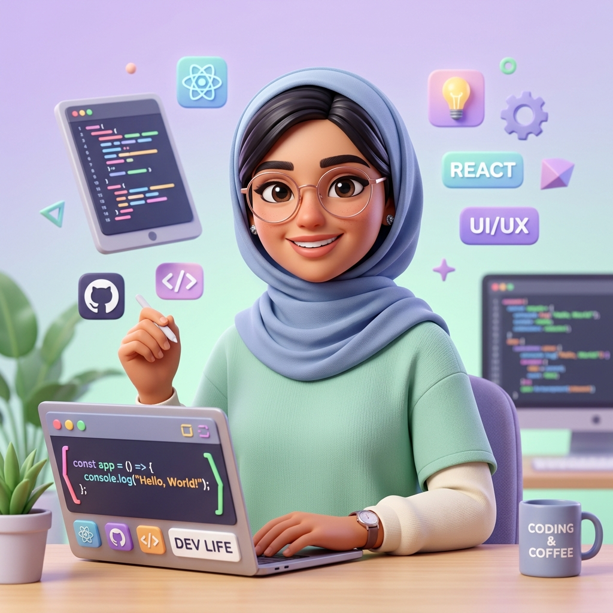

مرحبًا، أنا خلود 👋
مطوّرة واجهات أصنع تجارب رقمية تجمع بين الجمال والتقنية
شغوفة بتحويل الأفكار المعقدة إلى واجهات مستخدم مذهلة وسلسة. أهتم بأدق تفاصيل التصميم، كفاءة الأداء، وأحب استكشاف الذكاء الاصطناعي لبناء حلول ويب حديثة تترك أثراً استثنائياً.

ما وراء الشاشات والأكواد
أهلاً بك! اسمي خلود عبدالرحمن. رحلتي مع عالم الويب بدأت من فضول بسيط: كيف تتحول تلك الأسطر البرمجية الصامتة إلى صفحات تنبض بالحياة والتفاعل وتأسر انتباه المستخدم؟
بصفتي مطورة واجهات أمامية (Front-End Developer)، لا أتعامل مع البرمجة كمجرد وظيفة تقنية، بل كـ مساحة إبداعية حية. أهتم ببناء واجهات تجمع بين سلاسة الاستخدام، والتسلسل البصري المريح، والسرعة الفائقة، مستفيدة من قوة Tailwind CSS ومفاهيم التصميم العصري.
مع التطور الهائل في تقنيات الذكاء الاصطناعي، أحرص دائماً على دمج أحدث الأدوات الذكية في مسار عملي اليومي؛ سواء في توليد الأفكار، تحسين الكود، أو إثراء تجربة المستخدم الرقمية.
اهتمام بالتفاصيل
عناية دقيقة بالمساحات والخطوط والحركات الدقيقة.
أداء واستجابة
كود نظيف متوافق مع كافة مقاسات الشاشات والمتصفحات.
شغف بالذكاء الاصطناعي
توظيف أحدث أدوات AI لتسريع الإنجاز والابتكار.
الأدوات والتقنيات التي أتقنها
مجموعة من الأدوات البرمجية والتصميمية التي أستخدمها لتحويل الرؤى إلى واقع رقمي ملموس
تطوير الواجهات الأمامية
بناء هياكل متينة وكود سريع وتفاعلات سلسة
التصميم وتجربة المستخدم
صياغة واجهات جذابة ومريحة تدعو للاستكشاف
الأدوات والذكاء الاصطناعي
مضاعفة الإنتاجية بأحدث أدوات التطوير المعاصرة
مشاريع أفتخر ببنائها
نماذج واقعية لواجهات وتطبيقات تفاعلية صُممت ونُفذت بعناية وشغف
رحلتي في عالم التطوير
خطوات التعلم المستمر والشغف الذي قادني إلى هنا
اكتشاف الشغف بالبرمجة والويب
بدأت بتعلم أساسيات HTML وCSS، حيث سحرني تحويل الأكواد النصية إلى صفحات حية يمكن التفاعل معها. بنيت أولى صفحات الهبوط البسيطة واكتشفت شغفي بهندسة الواجهات وتجربة المستخدم.
إتقان JavaScript وبناء التفاعلات الحية
انتقلت لتعلم منطق البرمجة المتقدم عبر JavaScript الحديثة (ES6+)، مع التركيز على التلاعب بالـ DOM، التعامل مع البيانات، استهلاك واجهات برمجة التطبيقات (APIs)، وتطوير تطبيقات تفاعلية متجاوبة مع كافة الشاشات.
التخصص في Tailwind CSS وتصميم UI/UX عبر Figma
تعمقت في بناء أنظمة تصميم (Design Systems) متكاملة، وتحويل تصاميم Figma إلى كود نظيف فائق السرعة عبر Tailwind CSS. أصبحت أركز بشكل محوري على الدقة البصرية (Pixel Perfection) وتأثيرات Micro-interactions.
عصر الذكاء الاصطناعي وبناء منتجات رقمية ذكية
أعمل حالياً على دمج قدرات الذكاء الاصطناعي التوليدي في مشاريع الويب، وتطوير واجهات ذكية ومبتكرة تخدم المستخدم العربي، مع مواصلة استكشاف أحدث ما يتوصل إليه مجتمع التطوير العالمي.
أكثر من مجرد كود ✨
ما يلهم شخصيتي وأفكاري وفلسفتي في العمل والحياة
الفضول المستمر
أؤمن أن التعلم لا يتوقف عند شهادة أو دورة؛ الفضول المعرفي والتجربة الذاتية هما الوقود الحقيقي لكل مطور ناجح.
عين المصمم وفكر المبرمج
الكود المتين لا يكفي إن لم تكن الواجهة ممتعة، والواجهة الجميلة لا تكفي إن كانت بطيئة. التوازن بينهما هو الفن الحقيقي.
الذكاء الاصطناعي كشريك
لا أنظر للذكاء الاصطناعي كمنافس، بل كأداة خارقة تمكّنني من توسيع مداركي الإبداعية والتركيز على الابتكار والقيمة المضافة.
طقوس الإبداع
فنجان قهوة مختصة، قائمة نغمات لو-فاي هادئة، ومحرر أكواد مظلم ومرتب.. تلك وصفتي البسيطة لأفضل إنتاجية وصفاء ذهني.
لنصنع شيئاً رائعاً معاً
سواء كانت لديك فكرة مشروع، استفسار، أو رغبة في التعاون؛ يسعدني جداً سماع رسالتك